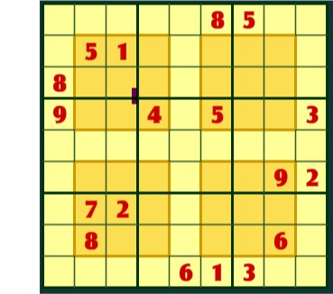

Your challenge will be to use a SAT solver (sat4j) to solve not just a normal sudoku, but a hyper sudoku. A hyper sudoku is a normal sudoku, but besides all the normal rules (all numbers of 1-9 in each row, column and 3x3 square) there are now 4 additional squares in the middle of the puzzle, and these must be filled with all numbers 1-9).
Here is an example of a hyper sudoku:

Hypersudoku's are quite hard for people, and actually for people the hyper-sudoku is harder than the normal sudoku. We will see that a SAT solver can solve even a hyper-sudoku quite fast.
The file https://www.cs.vu.nl/~frankh/spool/sudoku-rules.txt contains all the rules of a normal sudoku in clausal form. Read the various types of clauses and understand what they say, and what sudoku-rule they encode.
Formulate the additional rules for Hyper Suduku's in clausal form (the 4 inner squares must also be filled with all numbers 0-9. Add these files to sudoku-rule.txt and save it as hypersudoku-rules.txt.
hypersudoku-rules.txt with the input in sudoku1.txt into a new file sudoku1+hypersudoku-rules.txt.java -jar sat4j-core-2.0rc1.jar sudoku1+hypersudoku-rules.txt to let the SAT4 solver solve the puzzlesolution1.txt (in the output of sat4j that is the line starting with "v "). If the output instead says "UNSATISFIABLE" you have made a mistake in formulating the additional rules or in adding the initial values.Now check if your solution is correct. You can do this for instance by printing the solution1.txt file in a readable format, such as
3 4 6 1 9 8 5 2 7
7 5 1 3 4 2 9 8 6
8 2 9 7 5 6 4 3 1
9 6 8 4 2 5 7 1 3
2 3 7 8 1 9 6 4 5
5 1 4 6 3 7 8 9 2
6 7 2 9 8 3 1 5 4
1 8 3 5 7 4 2 6 9
4 9 5 2 6 1 3 7 8and then check if it satisfies all the rules of a hyper sudoku (0-9 in every column, row, the nine 3x3 outside squares and the four 3x3 inside squares. (The above solution is a correct hyper-sudoku solution of the exapmle in the figure above; can you see that it is not only a correct sudoku solution, but also a correct hyper sudoku solution?
If it is not a correct solution for a hyper-sudoku, you have made a mistake (for example in formulating the additional rules or in adding the initial values) and you have to fix it.
Of course, you can also solve your sudoku as a normal sudoku, without the extra hyper-sudoku clauses . Just combine sudoku-rules.txt with sudoku1.txt into one file, then use sat4j to solve this sudoku. You cam compare the runtimes of sat4j when solving the sudoku under the normal rules (from sudoku-rules.txt) or under the rules for hyper sudokus (from hypersudoku-rules.txt).
hypersudoku-rules.txtThe interactive SuDoKu tool at https://bob-carpenter.github.io/games/sudoku/java_sudoku.html.
The sat4j solver, download it from
https://www.cs.vu.nl/~frankh/spool/sat4j-core-2.0rc1.jar
and run it as java -jar sat4j-core-2.0rc1.jar your-file